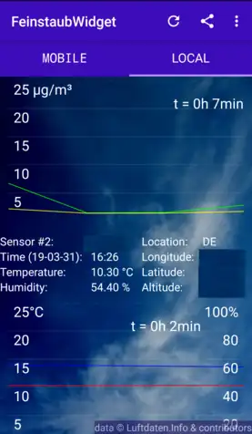

FeinstaubWidget
صور وتصميم
The OK Lab Stuttgart has a project to build fine particulate matter sensors by yourself. The data can then be sent to the database of https://luftdaten.info. This app shows you data from this network. It is not necessary to operate an own sensor to use this app. Currently supported sensor types are:
✓ ترخيص مفتوح (GPL-3.0-or-later) · آخر تحديث: 2024-05-17
0.78الإصدار
532 KBالحجم
GPL-3.0-or-laterالرخصة
Open in Kanzتحميل APK (532 KB)
Download APK
SHA-256: 0249e0aca4191b65f7727a08e5f41b5676f00c4cab7ce131c03fc01cf82f3dbd


تطبيقات تانية لنفس المطوّر (3)
More apps from this developer: de.kaffeemitkoffein
امسح الكود لفتح صفحة التطبيق
Scan to open this app page
لو كنز مش متثبت عندك: نزّل متجر كنز.
Not installed? Get the Kanz store.